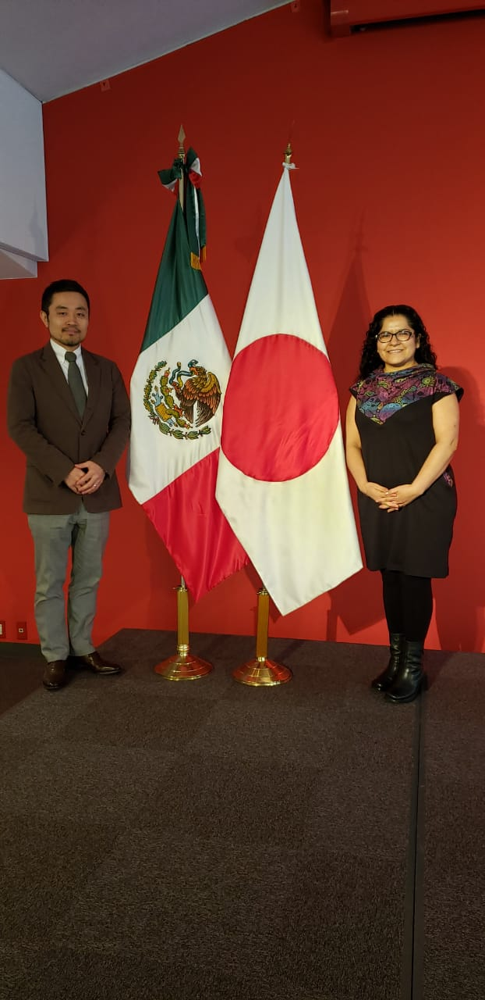

Retail & Food Service
Tortillas, mole, chiles, sauces, seasonings and Mexican brands.
MANIW & Co. connects Mexican producers with international buyers through adapted products, documentation and export logistics.
Mexican products for retail, food service, frozen goods, pulps, sauces and beverages.
Tortillas, mole, chiles, sauces, seasonings and Mexican brands.

Japan, USA, Spain, Korea, China, Canada, Germany and Scandinavia.
Packaging, formulation, labeling and destination-market requirements.
Commercial portfolio, international reach, collaborative network and export execution presented through a curated visual system.
Retail, food service, frozen goods, pulps, sauces, chiles, tortillas, mole and beverages.
Japan, USA, Spain, Korea, China, Canada, Germany and Scandinavia.

Institutional links, trade fairs, promotion and business development.

Documentation, transport coordination and customs procedures.
A cleaner editorial gallery of MANIW & Co. operations, meetings, packaging and export presence.


MANIW & Co. began in 2014 as a social project and in 2017 evolved into a commercial arm for Mexican producers.
Commercial vision with social responsibility and producer linkage.
Packaging, formulation, labeling and presentation adaptation.
Administrative coordination, logistics and customs procedures.
Regulatory foundation prepared to document export operations by product, tariff classification, destination country, and buyer requirements.
Tax ID, e-signature, tax status, and applicable export registries.
Official referenceTariff classification, duties, permits, notices and non-tariff regulations.
Official referenceRule of origin, eligibility for preferences and certificate or declaration of origin.
Official referenceProduct and destination validation: duties, VAT, entry requirements and labeling.
Official referenceFor food, plants, animals or regulated goods: certificates, controls and traceability.
Official referenceCommercial invoice, packing list, technical sheet, Incoterm, HS Code, packaging and transport.
Official referenceCommercial reach and links with foreign-trade and agribusiness stakeholders.
Scandinavia, Japan, United States, Spain, Korea, China, Canada and Germany.
Seals and documents depend on product, lot, destination and buyer requirements.
Technical sheet, invoice, packing list and documentary support.
Administrative coordination, transport and delivery by destination.
For volume, pallets, containers or consolidated shipments.
For samples, urgent requests or higher-value goods.
For North America, border operations and regional distribution.